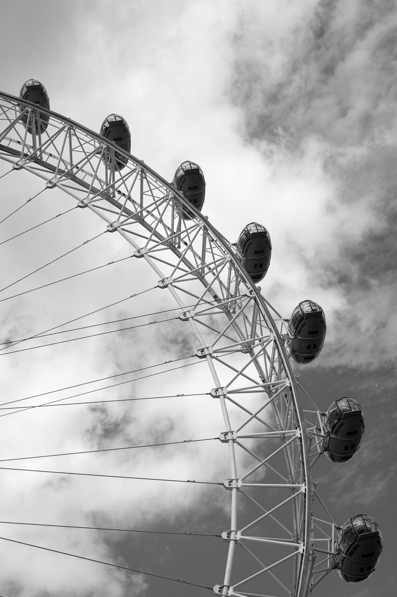
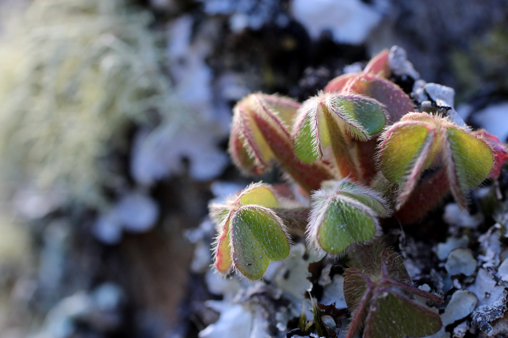

Amanda Grate
On my second trip to England the summer of 2019, I spent a week in London and about a week and a half in Northern England. While in London I did a lot of the typical touristy things like the London Eye, but found th emost beauty while hiking from coast to coast along the coast of Northern England. There I passed hundreds of sheep and other little special moments in nature.


blah